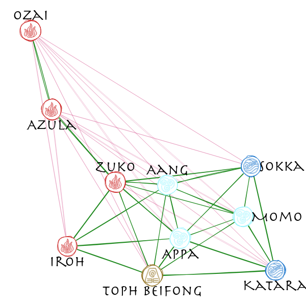

Using the java script library rough.js to draw sketchy, hand-drawn-like networks.
(Checkout ggrough for turning general ggplot objects into sketchy drawings)
Installation
You can install the developers version of roughnet with:
# install.packages("remotes")
remotes::install_github("schochastics/roughnet")Example
The package currently only works with {{igraph}} objects by setting styling elements as vertex/edge attributes.
library(roughnet)
library(igraph)
g <- make_graph("Zachary")
V(g)$shape <- "circle"
V(g)$shape[c(1,34)] <- "rectangle"
V(g)$fill <- c("#E41A1C", "#377EB8", "#4DAF4A", "#984EA3")[membership(cluster_louvain(g))]
V(g)$fillstyle <- c("hachure", "zigzag", "cross-hatch", "dots")[membership(cluster_louvain(g))]
V(g)$color <- "black"
V(g)$size <- 30
V(g)$stroke <- 2
E(g)$color <- "#AEAEAE"
roughnet(g,width = 960,height = 600)
You can save the plot with the function save_roughnet() (needs {{pagedown}} to be installed.)
# install.packages("pagedown")
p <- roughnet(g,width = 960,height = 600)
save_roughnet(p,"karate.png")Extended Example
The package also allows to place labels in or around vertices and implements some custom vertex shapes.
# install.packages(c("signnet","graphlayouts"))
library(signnet)
library(graphlayouts)
library(dplyr)
data("avatar") # Allies/Enemies relations in Avatar: The Last Airbender
main <- induced_subgraph(avatar,which(V(avatar)$main)) #only use the main characters
#calculate layout
w <- ifelse(E(main)$sign==1,3,1)
xy <- layout_with_stress(main,weights = 1/w)
V(main)$x <- xy[,1]
V(main)$y <- xy[,2]
V(main)$fill <- case_when(V(main)$affiliation=="earth kingdom"~"#8B6914",
V(main)$affiliation=="fire nation"~"#CD2626",
V(main)$affiliation=="water tribe"~"white",
V(main)$affiliation=="air nomad"~"#98F5FF",
TRUE~"grey"
)
V(main)$color <- case_when(V(main)$affiliation=="earth kingdom"~"#8B6914",
V(main)$affiliation=="fire nation"~"#CD2626",
V(main)$affiliation=="water tribe"~"#1874CD",
V(main)$affiliation=="air nomad"~"#98F5FF",
TRUE~"grey"
)
V(main)$shape <- case_when(V(main)$affiliation=="earth kingdom"~"earth",
V(main)$affiliation=="fire nation"~"fire",
V(main)$affiliation=="water tribe"~"water",
V(main)$affiliation=="air nomad"~"air",
TRUE~"circle"
)
E(main)$width <- ifelse(E(main)$sign==1,1.2,0.3)
E(main)$color <- ifelse(E(main)$sign==1,"#228B22","#CD3278")
V(main)$label <- V(main)$name
# position labels in the (c)enter of the vertex or (n)orth, (e)ast, (s)outh, or (w)est of it
V(main)$pos <- c("n","s","s","s","s","e","n","e","s","n")
roughnet(main, width = 600, height=600, font = "30px Herculanum")